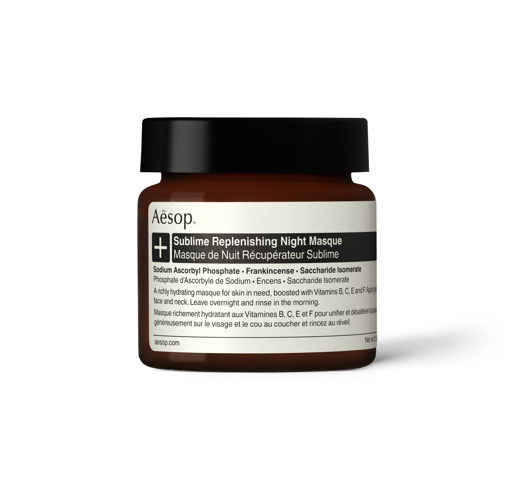
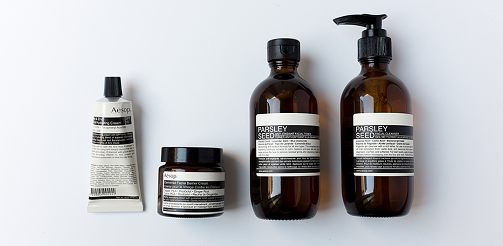
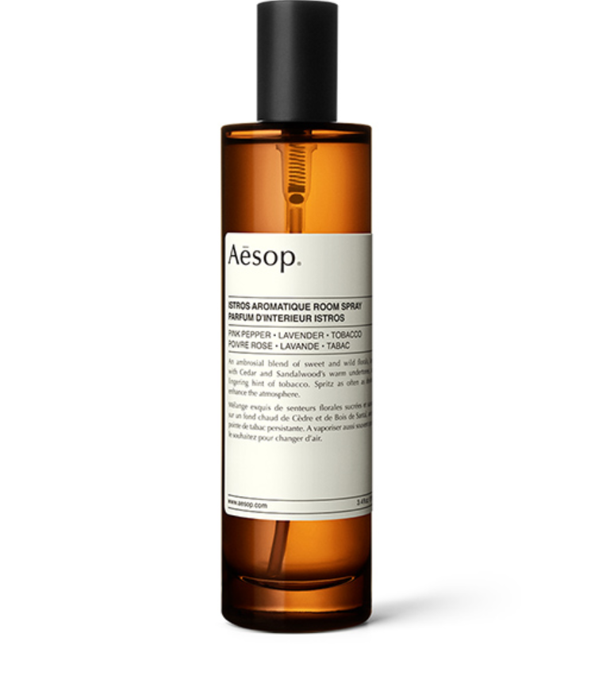
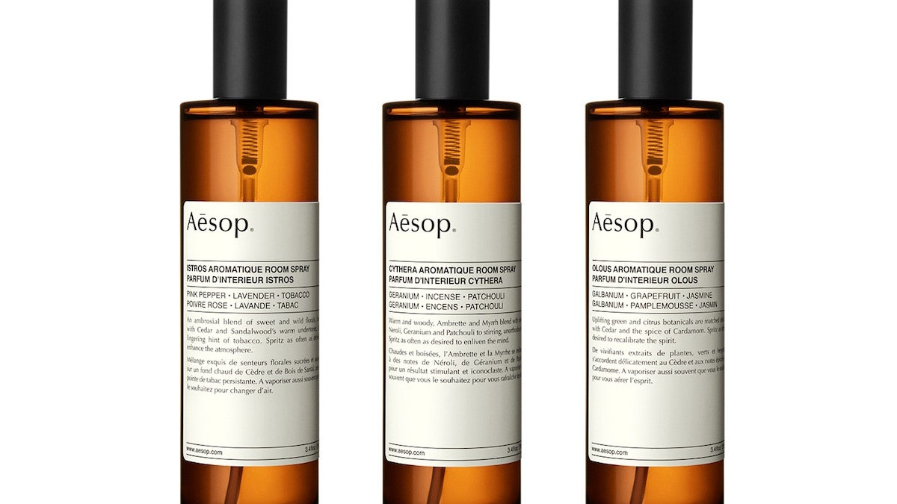
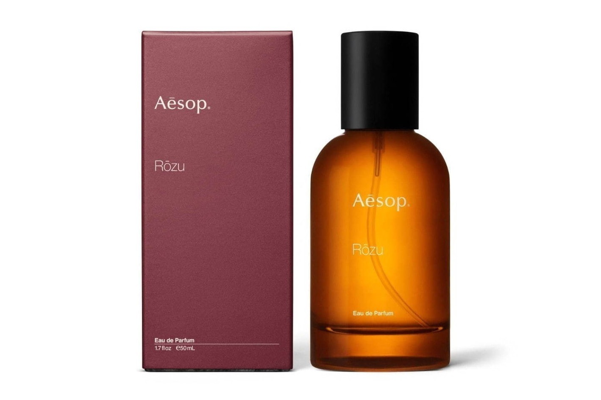
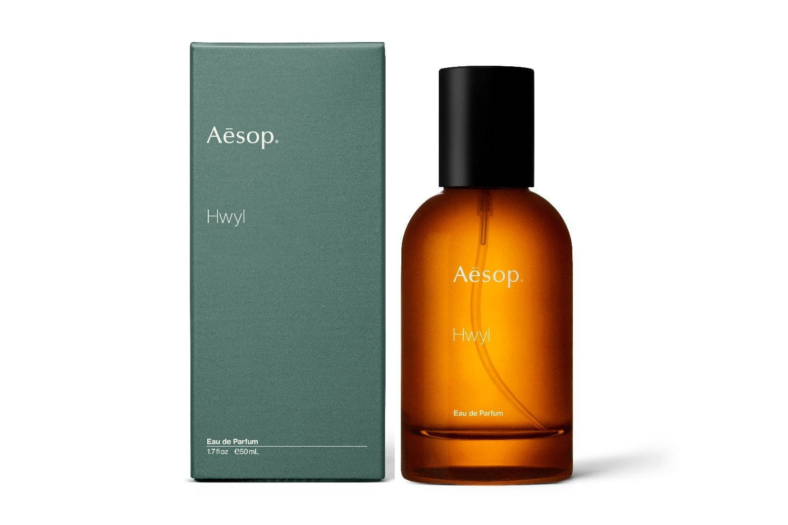
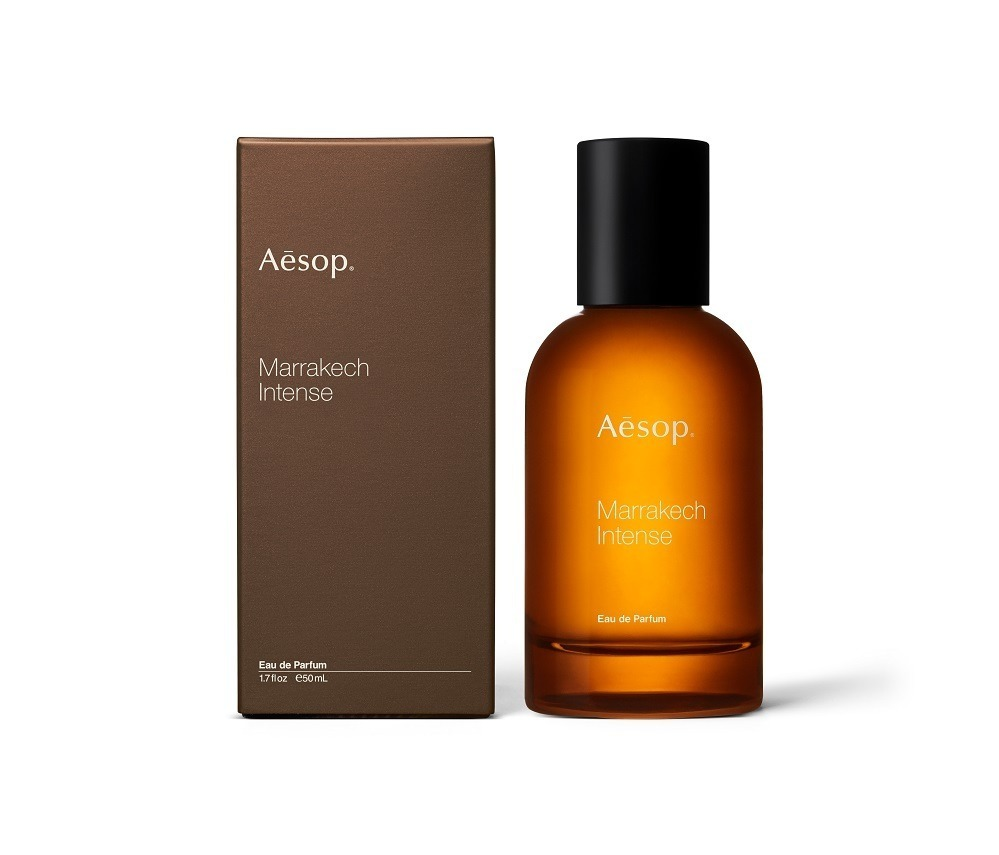
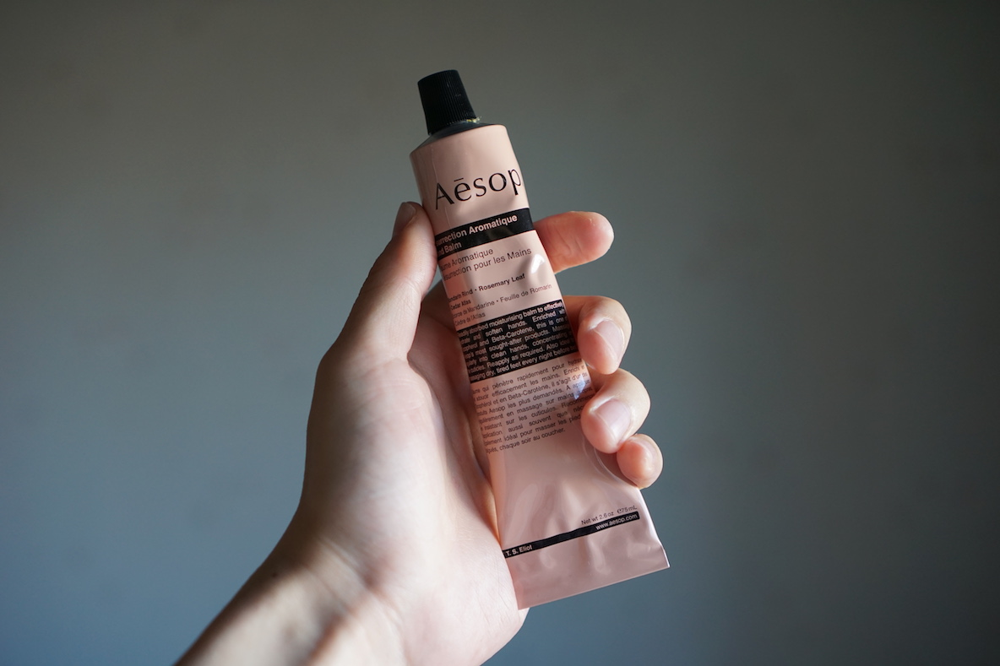
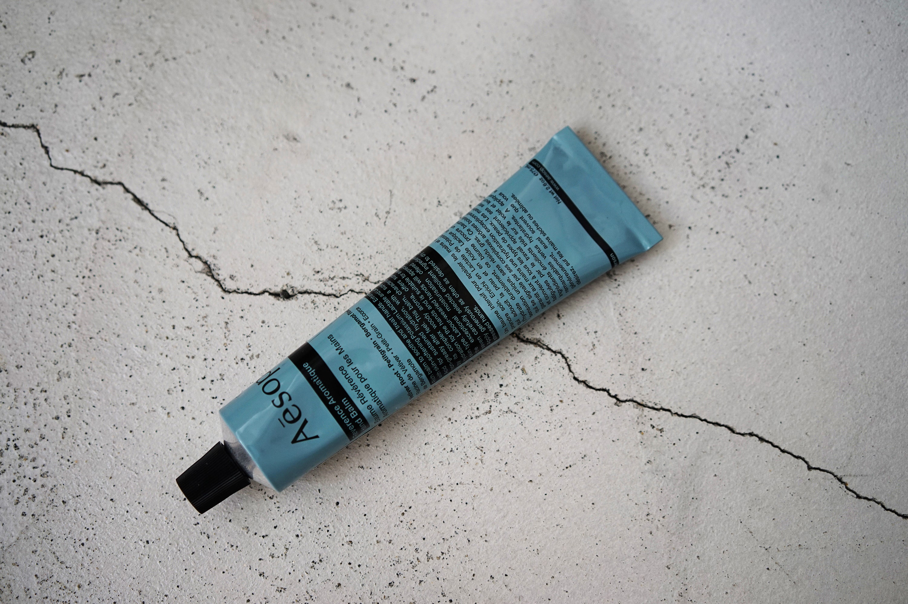

The scent is the basis of fashion
香りはおしゃれの基本
concept
コンセプト

「Aesop」とは？
イソップはオーストラリア発の人気スキンケアブランド。
香水だけでなくハンドクリームやハンドソープなど、
高品質の非植物由来成分と植物由来成分を使った心地の良い
スキンケアアイテムで人気を集めている。
おしゃれでミニマルなパッケージのため、女性はもちろん、
メンズ人気も高いです♪
Aesopが人気の理由
男性女性問わずに使えるおしゃれなフレグランスボトルも人気の理由。
イソップのフレグランスボトルは,
メンズにもおすすめできるスタイリッシュなデザインが、とても魅力的。


Room Fragrance
アロマティックルームスプレー
￥6050(税込み)
perfume
香水～
オードパルファムなので香りの持続時間が長いのにも関わらず落ち着いた香りなので万人うけする香水です。
おすすめの時期は春、秋、冬です。
ローズ オードパルファム
- ￥19,800
- フローラルな香りですがすごく甘いわけではないです。大人っぽいフローラルな香りです。 女性向けの香水です。
ヒュイル オードパルファム
- ￥13,640
- ヒノキ風呂みたいな感じ木のやさしさ。
そして温かみを感じるような香りリラックスしたい人におすすめ
マラケッシュ オードパルファム
- ￥14,300
- 上品で大人っぽいオリエンタルな香りです。
上品なお姉さん？のような独特な香りです（笑）
hand cream
ハンドクリーム
イソップの代表的プロダクトです。ハンドクリームつけた後に香水をつけると香り長持ち！！
ハンドクリームは二種類(各種3080円)

- レスレクションハンドバーム
- 柑橘系の清潔感のある香り。
さらさらしてるのでべたつきにくく、
スマホなどの端末を触っても跡がつきにくいのが人気の理由です♪
デザインも質感も女性にとても人気があります

- レバレンスハンドバーム
- しっとりとしていてリッチ感のある森の中にいるような香り。
かなり大人向けの香りなので好みが分かれやすい。
保湿力はこちらのほうがあり男性にお勧めです♪
ACCESS
アクセス
札幌駅から３分程で着けて思い立ったらいつでも気軽に訪れることができます。
札幌駅の中にあるので冬の寒い季節は外に出ずに済みます
近くにスターバックスもあるのでついでに立ち寄ってみてください♪
ADDRESS
〒060-0005
札幌市中央区北５条西２丁目ステラプレイス
TEL
011-209-5390